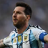
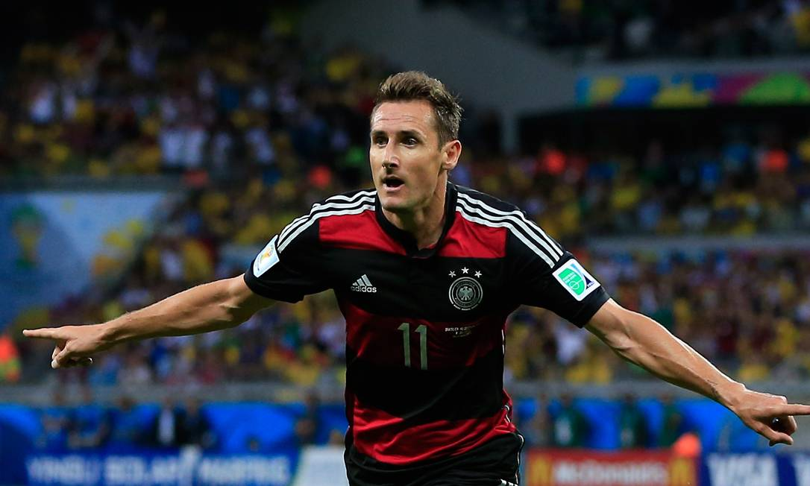
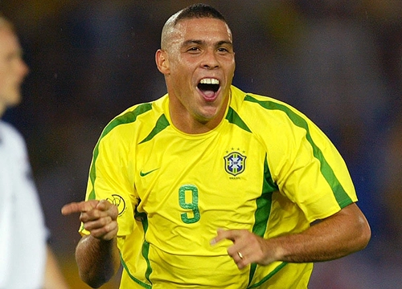
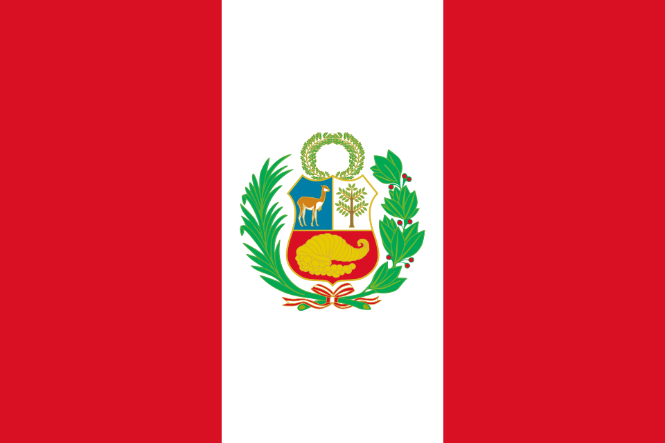
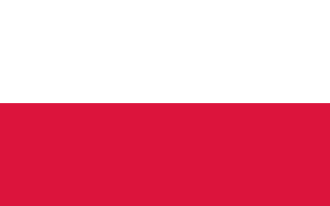
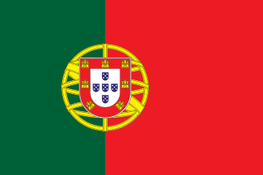

Pódio: Top 3 melhores artilheiros da história
Os três jogadores com mais gols marcados por suas seleções durante jogos da Copa do Mundo.
🥈
 16gols
16gols

Lionel Messi
16gols
🏅
 16gols
16gols

Miroslav Klose
16gols
🥉
 15gols
15gols

Ronaldo Fenômeno
15gols
Tabela dos maiores artilheiros da Copa do Mundo
| Posição | Jogador | Seleção | Gols | Jogos | Período |
|---|---|---|---|---|---|
| 1° | Miroslav Klose |
Alemanha |
16 gols | 24 partidas | 2002-2006-2010-2014 |
| 2° | Lionel Messi |
Argentina |
16 gols | 27 partidas | 2006-2010-2014-2018-2022-2026 |
| 3° | Ronaldo |
Brasil |
15 gols | 19 partidas | 1998-2002-2006 |
| 4° | Gerd Müller |
Alemanha |
14 gols | 13 partidas | 1970-1974 |
| 5° | Kylian Mbappé |
 França
França |
14 gols | 15 partidas | 2018-2022-2026 |
| 6° | Just Fontaine |
França |
13 gols | 6 partidas | 1958 |
| 7° | Pelé |
Brasil |
12 gols | 14 partidas | 1958-1962-1966-1970 |
| 8° | Jürgen Klinsmann |
Alemanha |
11 gols | 17 partidas | 1990-1994-1998 |
| 9° | Sandor Kocsis |
 Hungria
Hungria |
11 gols | 5 partidas | 1954 |
| 10° | Gabriel Batistuta |
Argentina |
10 gols | 12 partidas | 1994-1998-2002 |
| 11° | Teófilo Cubillas |
 Peru |
10 gols | 13 partidas | 1970-1978-1982 |
| 12° | Grzegorz Lato |
 Pôlonia |
10 gols | 20 partidas | 1974-1978-1982 |
| 13° | Gary Lineker |
 Inglaterra
Inglaterra |
10 gols | 12 partidas | 1986-1990 |
| 14° | Harry Kane |
Inglaterra |
10 gols | 12 partidas | 2018-2022-2026 |
| 15° | Thomas Muller |
Alemanha |
10 gols | 19 partidas | 2010-2014-2018-2022 |
| 16° | Helmut Rahn |
Alemanha |
10 gols | 10 partidas | 1954-1958 |
| 17° | Ademir |
Brasil |
9 gols | 6 partidas | 1950 |
| 18° | Roberto Baggio |
 Itália
Itália |
9 gols | 16 partidas | 1990-1994-1998 |
| 19° | Eusébio |
 Portugal |
9 gols | 6 partidas | 1996 |
| 20° | Jairzinho |
Brasil |
9 gols | 16 partidas | 1996-1970-1974 |